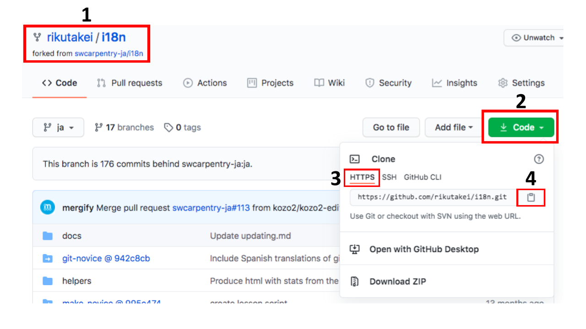

Quick guide to translation
Fork the repo
- Click on the “Fork” button

Clone/Download your fork
Make sure you are in your account and in the forked i18n repo
Click on “Clone”
Click on “HTTPS”
Click on the clipboard icon (this will copy the URL)
Go to terminal (or command line) and enter “git clone
” Check that there is an “i18n” folder


Decide which lesson to translate
Go to SWC-ja’s i18n repo
Click on “Issues”
Click on any issue with “Translation” in the title
Read the description
Comment on the issue to let people know that you are working on this (e.g. “I am working on this!!”)


Translate
Go to “i18n” folder
Go to “po” folder
Find any file with “.ja.po” file extension
Translate with your favorite PO editor or directly edit the file
Directly editing the file
Do NOT change “msgid”
Translate anything in between the quotation marks in the “msgstr” block only